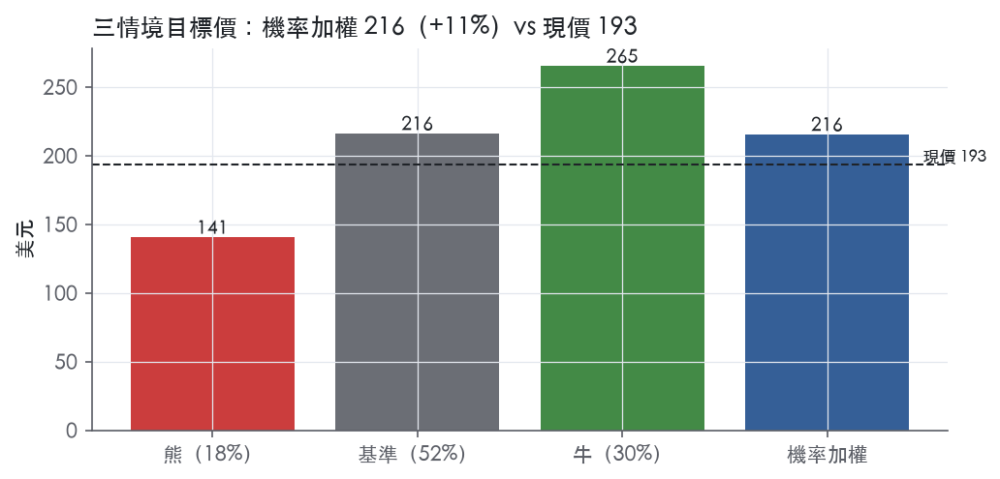
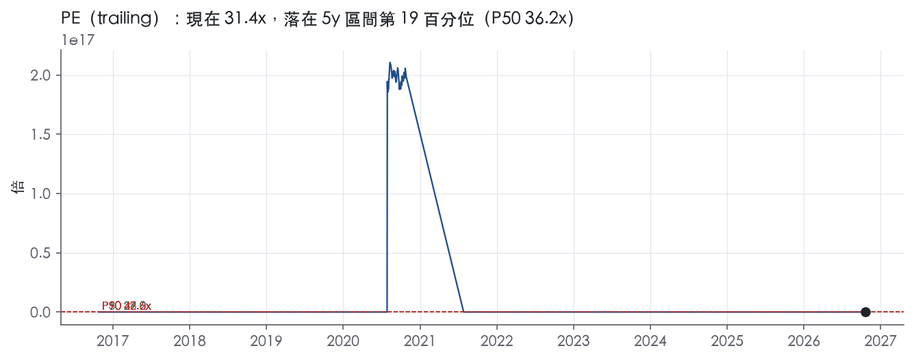
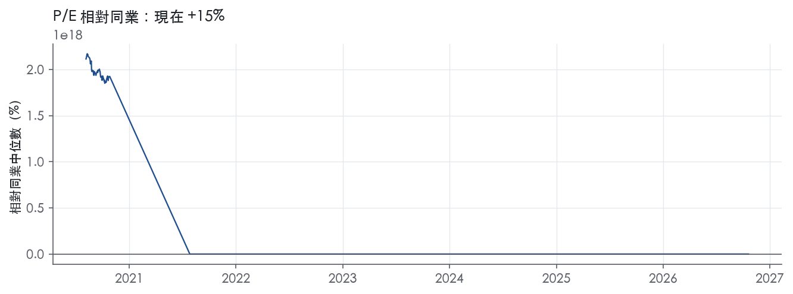
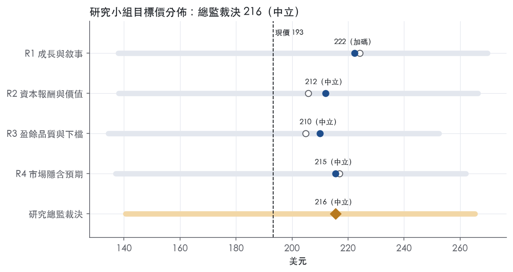
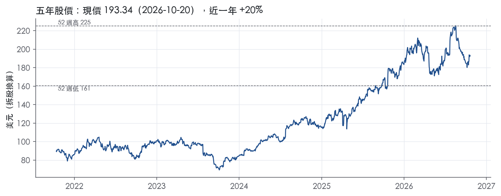

評等總表 › 工業 › RTX
盈餘上修倍數不重評，略超門檻，中性｜評等 中立｜目標價 216
| 報告日 | 評等 | 目標價 | 當時股價 | 超額報酬 |
|---|---|---|---|---|
| 2026-10-20 | 中立 | 216 | 193 | +3.2% |
| 2026-10-09 | 中立 | 210 | 186 | +4.7% |
| 快評 | 動作 | 結論 |
|---|---|---|
| 2026-10-20 | 維持 | 營業利益高於預測，主因一次性，維持中立 |
| 評等 | 中立（邊界，鄰近加碼） |
| 12 個月目標價 | 216 美元 |
| 現價 | 193.34 美元（2026-10-20） |
| 預期報酬 | 股價 +11.5%＋股息 1.5%＝總報酬 +12.9%；同業籃門檻 9.7%，超額 +3.2% |
| 估值方法 | P/E 26.8x，套在第 5–8 季的EPS（也就是一年後的未來四季） |
| 三情境 | 熊 141／基準 216／牛 265 |
| 研究流程 | 四位研究員兩輪辯論＋研究總監裁決 |
| 資料來源 | SEC EDGAR XBRL、Tiingo、FRED（全免費） |
盈餘上修倍數不重評，略超門檻，中性（研究總監裁決，四位研究員兩輪辯論後）
評等 中立（邊界，鄰近加碼）｜12 個月目標價 216 美元（總監三情境機率加權 217 與研究員中位數 214 各半）｜現價 193.34（2026-10-20）
預期報酬：股價 +11.5%＋股息 1.5%＝總報酬 +12.9%。同業籃門檻 9.7%，超額 +3.2%，離加碼的分界不到三個百分點，屬邊界評等（落在其他級距的機率約三成）。
估值方法：P/E 26.8x，套在第 5–8 季的EPS（也就是一年後的未來四季）。三情境：熊 141（18%）／基準 216（52%）／牛 265（30%）。
什麼會讓研究總監改變看法：FY2027 指引兩位數有機成長且 Tomahawk/AMRAAM 定案後 Raytheon ROS 不低於現有水準，我把倍數移到前瞻帶 P75 轉多；P&W 再認列客戶信用或新引擎型號粉末冶金費用、或 Q4 FCF 低於 9.0B，我把 y1 營益率退回 11.6%、倍數壓到 P25 轉空。
| 過去四季（實際，FY2026Q3） | 未來四季 | 第 5–8 季 | 第 9–12 季 | |
|---|---|---|---|---|
| 營收（B） | 96.0B | 104.6B | 112.5B | 119.2B |
| 營收成長 | 11.6% | 9.0% | 7.5% | 6.0% |
| 營業利益率 | 11.8% | 12.0% | 12.3% | 12.5% |
| EPS（美元） | 6.17 | 7.33 | 8.07 | 8.67 |
| EPS 成長 | 26.5% | 19.0% | 10.0% | 7.5% |
| 每股股息（美元） | 2.82 | 2.82 | 2.82 | 2.82 |
| P/E（現價） | 31.4x | 26.4x | 24.0x | 22.3x |
| 股息殖利率（現價） | 1.5% | 1.5% | 1.5% | 1.5% |
過去四季為申報數字；預測為研究總監的假設、程式計算。倍數與殖利率都用現價計算，用來看現價對應各期獲利的高低。
| 項目 | 上次（2026-10-13） | 這次（2026-10-21） | 變動 |
|---|---|---|---|
| 評等 | 中立 | 中立 | ＝ |
| 機率加權目標價（美元） | 210 | 216 | +2.5% |
| 超額報酬 | 4.7% | 3.2% | -1.5 pp |
| 目標倍數 | 27x | 26.8x | — |
| 未來四季營收成長 | 7.0% | 9.0% | +2.0 pp |
| 未來四季營益率 | 11.6% | 12.0% | +0.4 pp |
| 未來四季 EPS（美元） | 6.97 | 7.33 | +5.2% |
| 熊／基準／牛機率 | 18／51／31 | 18／52／30 | — |
程式計算；「未來四季」各自從當次報告的資料起點算。研究總監逐點說明見第八章「與上次報告比較」。
| 情境 | 機率（歷史） | 故事 | 未來四季營收成長 | 第 5–8 季營益率 | 倍數 | 目標價 | 股價漲跌 |
|---|---|---|---|---|---|---|---|
| 熊 | 18%（16%） | 風險表第 2 條 P&W GTF 粉末冶金/耐久性擴大疊加第 3 條 CR 延遲，售後放緩與固定成本去槓桿壓營益率到 10%，倍數到前瞻帶 P10 | 6.0% | 10.0% | 23.0x | 141 | -27.3% |
| 基準 | 52%（51%） | 成長隨指引放緩至高個位數，三分部兩升一平、營益率每年約 30bp 墊高，倍數停在前瞻帶 P50 不重評 | 9.0% | 12.3% | 26.8x | 216 | 11.8% |
| 牛 | 30%（33%） | FY2027 指引兩位數有機成長、Tomahawk/AMRAAM 以接近現有 ROS 定案、GTF 售後延續兩成成長，倍數到前瞻帶 P75 | 11.0% | 13.0% | 30.0x | 265 | 37.2% |
目標價由程式依研究總監的驅動與倍數計算；機率由研究總監給定。括號內是歷史頻率：把這檔股票過去十年 12 個月報酬的波動形狀，置中在基準情境，結果落在各情境附近的比例。

四位研究員用不同方法各自估值，回應研究總監的質疑後交出第二輪，最後由總監逐點裁決。各研究員的主張見第七章，裁決理由見第八章，完整論證見《研究底稿》。
| 立場（一輪→二輪） | 加權目標價（一輪→二輪） | 評等（一輪→二輪） | 第二輪倍數 | 熊～牛目標價 | |
|---|---|---|---|---|---|
| R1 成長與敘事 | 看多→看多 | 224→222 | 加碼→加碼 | 29.0x | 138～270 |
| R2 資本報酬與價值 | 中性→中性 | 206→212 | 中立→中立 | 26.8x | 138～266 |
| R3 盈餘品質與下檔 | 中性→中性 | 205→210 | 中立→中立 | 26.0x | 134～252 |
| R4 市場隱含預期 | 看多→中性 | 217→215 | 中立→中立 | 26.0x | 137～262 |
| 研究總監裁決 | 中性 | 216 | 中立 | 26.8x | 141～265 |
目標價由程式依各自的驅動與倍數計算；評等＝機率加權總報酬 − 同業籃門檻。
RTX 是一家航太與國防公司，為商用、軍用與政府客戶提供先進系統與服務¹。公司以原廠設備與售後維修備件兩大環節服務商用航空產業，同時作為主承包商或分包商，在廣泛的國防相關計畫上服務國內外軍方與政府客戶¹。2025 年美國政府銷售佔總淨銷售額 38%、國際銷售佔 47%（皆為原文揭露比例）¹。公司成立於 1934 年，在特拉華州註冊¹。整體看，RTX 是商用飛機售後利潤引擎加軍工長週期訂單的雙軌現金流生意，景氣循環敏感度低於多數工業股。
公司分為三大業務部門：Collins Aerospace、Pratt & Whitney 與 Raytheon，各自涵蓋一組相似業務¹。Collins Aerospace 是先進航太與國防產品的全球領先供應商，產品線涵蓋電力系統、環控系統、飛控系統、起落架、客艙內裝、通訊導航監視系統與售後維修服務¹；Collins 最大商用客戶 Boeing 與 Airbus 合計佔其分部銷售 2025 年 16%、2024 年 16%、2023 年 19%¹。Pratt & Whitney 是全球主要飛機發動機供應商之一，產品包括寬體、窄體與大型區域客機用大型發動機，以及軍用戰鬥機、轟炸機、加油機、運輸機發動機，另有小型發動機與輔助動力系統¹；其最大商用客戶 Airbus 佔分部銷售 2025 年 29%、2024 年 31%、2023 年 48%，可見客戶集中度正在下降¹。GTF 發動機家族已為超過 90 家營運商、逾 2,600 架飛機提供動力，涵蓋 A320neo、A220 與 E-Jets E2 三個平台¹；F135 發動機則是 F-35 戰機唯一動力來源，2025 年飛行時數突破百萬小時，並獲 28 億美元（原文金額）Lot 18/19 長前置期合約¹。Raytheon 專注於防禦與攻擊性威脅偵測、追蹤與阻斷能力，產品包括 AMRAAM、Patriot 防空系統、Tomahawk、SM-6、LTAMDS、Javelin 等飛彈與雷達系統¹。三分部各自佔總營收比重、FY2025 全年各分部毛利率與營益率，10-K Item 1 未逐一揭露，須另參 Item 7/Item 8；就最近一季而言，Collins、P&W、Raytheon 的 FY2026Q3 銷售額分別為 8,382M、9,231M、8,031M（皆為原文金額）²，三者規模已相當接近，顯示公司不再單純依賴 Collins 的售後利潤撐盤。
美國政府是最大單一客戶，2025 年美國政府銷售（不含透過美國政府的對外軍售）為 33,279M 美元，佔總淨銷售額 38%，較 2024 年 40%、2023 年 46% 持續下滑¹。國際銷售方面，2025 年為 41,312M 美元，佔總淨銷售額 47%，高於 2024 年與 2023 年的 43%¹。通路上，Collins 與 P&W 主要透過飛機製造商、航空公司、租賃公司、維修商與獨立經銷商銷售，Raytheon 則以主承包商/分包商身分服務美國國防部各軍種及國際政府客戶¹。公司在約 25 個國家營運約 225 個製造、生產或翻修設施，員工約 18 萬人，69% 位於美國，分布於 52 個國家¹。總在手訂單（backlog）截至 2025 年底為 268B 美元，較 2024 年底 218B 美元明顯成長，公司預期其中約 25% 將在未來 12 個月內轉化為營收¹；最新一期（FY2026Q3）backlog 已進一步攀升至 340B 美元，其中商用 176B 美元、國防 164B 美元²。國際銷售佔比上升、國防訂單結構轉趨多元，是公司降低對單一客戶與單一市場依賴的具體證據。
FY2025Q4：營收 24.24B（dv 推導），年增 12.1%，營益率 10.7%【判，依資料包年增與營益率欄位】。FY2026Q1：營收 22.08B，年增 8.7%，營益率上升至 11.6%（相關欄位）。FY2026Q2：營收 24,708M 美元，較去年同期 21,581M 美元增加 14%，有機成長 16%³；調整後 EPS 1.89 美元，較去年同期增加 21%³；自由現金流 2,878M 美元³；公司同時上修 2026 全年展望，調整後營收上修至 95.0–96.0B 美元，調整後 EPS 上修至 7.10–7.25 美元，自由現金流上修至 8.50–8.75B 美元³。FY2026Q3：營收 24,965M 美元，較去年同期 22,478M 美元增加 11%，有機成長 12%²；GAAP EPS 1.89 美元，調整後 EPS 2.26 美元，年增 33%，其中包含 0.25 美元的 IEEPA 成本回收²；營運現金流 2.9B 美元，自由現金流 2.1B 美元²；公司再次上修全年展望：調整後營收 97.0–97.5B 美元、組織成長 10–11%、調整後 EPS 7.65–7.75 美元、自由現金流 9.0–9.2B 美元²。CEO Chris Calio 表示當季新增商用與國防訂單超過 81B 美元，推動 backlog 達到 340B 美元的歷史新高²。連續四季營收年增率維持雙位數、且每季均上修全年指引，顯示需求能見度與執行力同步改善，這在航太國防股中並不常見。
公司將 Pratt & Whitney 新發動機開發與現有量產發動機改良列為重要成長機會，並透過與第三方的合作分攤收入、成本與風險¹；GTF Advantage 已取得 FAA 與 EASA 認證，可在現有 GTF 基礎上再降低最多 1% 油耗、提升 4–8% 起飛推力¹。Raytheon 方面，公司強調 2025 年新簽訂的 AMRAAM、GEM-T、LTAMDS 低速初期生產、AIM-9X、NASAMS、NGJ-MB 等多項合約，以及對 Coyote 無人機蜂群系統的全球需求持續增加¹。管理層在最新法說中強調「強勁執行力與營運專注帶動商用航太與國防雙位數有機成長」，並表示將持續聚焦提高產出、優化成本結構、投資新技術以支持客戶與驅動持續成長²。公司自身論述的成長引擎集中在三點：GTF 售後維修網路放量、F135/F-35 長週期軍用現金流、以及 Raytheon 飛彈系統在地緣政治緊張下的全球訂單擴張。從財務結果看，這三條引擎已開始同步兌現，而非僅停留在敘事層面，三分部 FY2026Q3 調整後營益率同步改善即是佐證。backlog 結構中商用與國防占比接近 1:1，意味公司對單一下游景氣循環的曝險已顯著分散。
RTX 在業務層面有真實的競爭優勢，但按本章標準（ROIC 對資本成本）衡量，我們沒有把握 ROIC 能在窄護城河要求的年限內持續高於資本成本，因此評級為「無」。ROIC 十年平均 4.9%，資本成本代理值 10.2%，有資料的 9 年中只有 1 年高於資本成本。趨勢判為變寬：ROIC 由 FY2023 的 3.2%升至 FY2025 的 7.9%，與資本成本的差距正在收斂。這個「無」是報酬面的結論，不代表業務沒有壁壘；ROIC 越過 10.2% 並守住，就是上調評級的觸發條件。
優勢集中在轉換成本、無形資產（認證與授權）與效率規模三類，沒有成本優勢或網路效應的證據。
轉換成本：F135 發動機專供單發的 F-35 Lightning II，三個機型變體都使用 F135¹。合作夥伴國與透過對外軍售購買的 F-35 也全部使用 F135¹。GTF 家族為 3 個平台、超過 90 家營運商的 2,600 架以上飛機提供動力¹。公司自己指出，客戶對發動機、零組件與系統的選擇會顯著影響未來的零件與服務銷售¹。平台一旦選定，機隊服役期間幾乎不會更換發動機或主系統，售後收入因此被鎖定數十年。Collins 在 2025 年取得超過 4B 美元的長期維修與備件合約¹。
無形資產（認證與授權）：商用航太產品的生產品質、適航與安裝核准、維修程序都受 FAA 與各國航空主管機關監管¹。GTF Advantage 在 2025 年取得 FAA 與 EASA 認證¹。部分產品列在 ITAR 美國軍品清單，出口前須取得政府許可；國防業務也需要具安全許可的人員¹。認證與保密資格要花多年取得，對新進者是實質門檻。專利本身不構成護城河，公司表示任何單一智慧財產權到期都不會對業務造成重大影響¹。
效率規模：新發動機開發風險與成本高，P&W 以合作安排分攤，第三方在各計畫的合計權益介於 13% 至 49%¹。連 P&W 都要找外部夥伴分攤開發，市場容不下多家新進者，這是效率規模的典型特徵。
數字大體不支持護城河主張，業務壁壘還沒有轉化為超額報酬。ROIC 十年平均 4.9%、標準差 3.5%、區間 -2.2% 至 11.4%，平均減資本成本為 -5.3%。營業利益率十年平均 8.4%、標準差 4.7%、最低 -3.3%，不符合寬護城河應有的利潤率穩定度。唯一的支持訊號是 FCF 利潤率：標準差 1.8%、十年最低仍有 3.5%，現金創造遠比會計利潤穩定。
數字與業務面判斷衝突，部分原因是十年序列可比性差。營收成長標準差 19.6%，FY2018 為 -42.0%、FY2019 為 30.7%。稀釋股數由 FY2019 的 0.86B跳到 FY2020 的 1.36B，代表期間經歷過大規模業務組合與股本變動，投入資本很可能含有大量併購溢價，壓低了報表 ROIC。我們不以此為由維持較高評級：股東實際投入的就是這個資本基礎，估值必須面對報表 ROIC。資本成本代理值反映的是 10 年債 5.15%，高利率環境本身就抬高了門檻。
最大的侵蝕來源是售後市場被非原廠零件分食，其次是政府合約條款與合規風險。客戶（包括美國政府與其他政府）可以向原廠以外的供應商採購零件，這會影響備件銷售¹。部分競爭者以大幅折扣、性能與營運成本保證、參與融資等方式爭奪售後市場¹。國防端出現更多商用競爭者與採用不同技術路線、商業模式的新進者，政府標案也要求更廣泛的智慧財產揭露與權利分享¹。
美國政府有權片面以便利為由終止合約，也能片面定案未定價合約¹。獨家的 F135 在 2025 年拿到的是 2.8B 美元的未定價合約行動（UCA）¹。獨家地位不等於定價權，買方可以片面定價，限制了超額報酬的上限。
合規方面，DOJ 若認定違反延緩起訴協議，Raytheon Company 或公司可能被追訴任何聯邦刑事違法行為¹。違反政府採購規範可能導致停權或禁止參與政府合約¹。客戶也偏集中，Airbus 佔 P&W 分部 2025 年銷售的 29%¹。Powder Metal Matter 被列為可能影響未來結果的因素之一¹。龐大的裝機量同時意味品質問題會被放大，轉換成本這項優勢也有反面風險。
目標倍數相對同業應持平，不給護城河溢價，因為 ROIC 仍低於 10.2% 的資本成本，超額報酬尚未被數字證實。P/E 31.4x 位於 5 年 19.1% 分位，但 EV/Sales 3.0x 位於 5 年 82.8% 分位，市場已經為利潤率修復付費，不宜再疊加品質溢價。ROIC 越過資本成本並在後續年度守住時，評級可上調為窄，屆時再改給溢價。
| 指標 | 最新 | 十年平均 | 標準差 | 最低 | 最高 |
|---|---|---|---|---|---|
| ROIC | 7.9% | 4.9% | 3.5% | -2.2% | 11.4% |
| 營業利益率 | 10.5% | 8.4% | 4.7% | -3.3% | 14.4% |
| FCF 利潤率 | 9.0% | 6.9% | 1.8% | 3.5% | 9.0% |
| ROE | 10.7% | 8.3% | 6.5% | -6.2% | 15.9% |
程式計算。資本成本代理值（10 年債＋5%）：10.2%；ROIC 平均減資本成本：-5.3%；ROIC 有資料的 9 年中，高於資本成本 1 年。
RTX LTM 現金轉換（CFO／淨利 1.48x、FCF／淨利 1.13x）與應計比率（-2.3%）都落在綠燈區，顯示帳列盈餘有紮實的現金支撐，不是靠應計堆出來的【判，量化底稿】。真正拖分的是利息保障倍數（近三年平均 2.94x）落在紅燈，以及淨負債／EBITDA 十年平均高達 4.20x，兩者都指向 2020 年 UTC-Raytheon 合併後留下的高槓桿結構尚未完全消化【判，量化底稿】。整體評級給「中」：紅旗有解釋（合併後去槓桿軌跡明確、LTM 淨負債／EBITDA 已降到 1.75x），但利息保障偏低這件事本身限制了對盈餘品質打滿分的空間。
現金是跟上的，而且近三年轉換率比十年平均更好。LTM CFO／淨利 1.48x、三年平均 1.85x，均優於十年平均 1.16x。FCF／淨利 LTM 1.13x、三年平均 1.28x，同樣優於十年平均 0.80x。應計比率 LTM -2.3%、三年平均 -2.2%，皆為負值，代表淨利成長背後有現金流加持而非應收帳款或存貨堆積。存貨成長與營收成長的落差在 FY2025 為 -5.1pp，綠燈，顯示營運資金沒有在吃掉盈餘【判，量化底稿】。從季度數據看，FY2025Q2 CFO 僅 0.46B、FCF 為 -0.07B，是八季中唯一的弱點，但隨後三季（Q3、Q4、FY2026 各季）CFO 都回升到 1.85B–4.64B 區間，顯示那一季是時點性的營運資金波動，不是趨勢反轉。
Q3 2026 GAAP EPS 1.89 美元，包含 0.26 美元的收購會計調整與 0.11 美元的重組及其他顯著／非經常性項目，調整後 EPS 為 2.26 美元²。調整後 EPS 當中有 0.25 美元來自 IEEPA 成本回收²。GAAP 淨利 2,583M 美元，調整項包含 0.3B 收購會計調整與 0.2B 重組及其他非經常性項目，調整後淨利 3,091M 美元，年增 34%，其中 1.1B 的調整後分部營業利益成長裡包含 0.4B 的 IEEPA 回收²。分部層級看，Collins 調整後營業利益成長包含約 250M 美元 IEEPA 回收，Pratt & Whitney 調整後營業利益包含約 160M 美元 IEEPA 回收，同時 P&W 的 GAAP 營業利益含一筆 363M 美元的客戶破產費用²。我的判斷是：收購會計攤銷是真實的非現金成本但年年發生，不該完全加回；重組費用多數屬一次性可以加回；但 IEEPA 回收（合計約 0.4B 美元，涉及貿易政策關稅成本的回收）性質上偏一次性或政策依賴型現金流入，不應假設會持續出現在未來每一季。換句話說，Q3 調整後 EPS 33% 的年增中有相當部分是 IEEPA 這類非經常性受益墊高的，實際經營性成長應打折看待。
槓桿正在改善但起點很高。淨負債／EBITDA LTM 1.75x（黃燈）明顯優於近三年平均 3.36x 與十年平均 4.20x，顯示公司過去幾年持續去槓桿。淨負債水位（27.50B）較 FY2023 年底的 36.49B、FY2024 年底的 34.90B 已明顯下降（年度表）。資本配置方面，（股利＋回購）／淨利 LTM 45.2%（黃燈但接近綠燈門檻），近三年平均卻高達 211.6%，十年平均 106.4%；這主要反映 2020、2021 等淨利受壓低的年度裡股東回饋金額相對淨利基期偏高，而非近期在舉債過度回饋股東。稀釋股數變動 LTM 僅 +0.2%，近三年平均為 -2.9%（回購淨減股），但十年平均高達 +7.0%（黃燈），這個高點完全來自 2020 年 UTC 與 Raytheon 股票對股票合併時的大量增發（FY2020 稀釋股數從 0.86B 跳到 1.36B，年度表），是結構性的一次性事件，不是持續稀釋【判，量化底稿】。
利息保障倍數紅燈（近三年平均 2.94x，十年平均 3.94x，均低於 8.00x 的綠燈門檻）：這是真問題但有歷史成因可解釋——2020 年 UTC-Raytheon 合併後總債務大幅墊高（FY2020 淨負債 22.14B，FY2023 一度攀升至 36.49B，年度表），利息負擔隨之上升，壓低了營業利益對利息的覆蓋倍數【判，量化底稿】。隨淨負債／EBITDA 已降至 LTM 1.75x，這個比率理論上應同步改善，但計分表 LTM 欄位顯示「—」，無法直接驗證最新一期是否已脫離紅燈，這是本報告的資訊缺口，應提醒估值端留意下一期揭露。
淨利率 FY2019→FY2020 跳動 -18 個百分點：這與全球商用航空在 2020 年因疫情急凍直接相關，年度表顯示 FY2020 營益率驟降至 -3.3%、淨利轉虧 -3.52B（年度表）；本次提供的 10-K Item 7 原文節錄僅涵蓋 Item 1／1A 商業與風險描述，未包含 Item 7 實際的年度財務分析段落，因此無法在文字上逐項核對減損或重組細節，但航空業於 2020 年的需求崩跌是公開且一致的總經事實，可合理視為一次性外生衝擊而非盈餘品質結構性惡化。
淨利率 FY2020→FY2021 跳動 +12 個百分點：為上述疫情谷底後的正常復甦反彈，FY2021 營益率回升至 8.0%、淨利轉為 3.86B（年度表），方向與幅度符合景氣正常化邏輯，不構成盈餘品質疑慮。
稀釋股數十年平均 +7.0% 黃燈：如上節說明，單一事件（2020 合併增發）主導十年平均，近三年已轉為淨減股（-2.9%），判定為假警報（會計基期效應），非持續性稀釋【判，量化底稿】。
（股利＋回購）／淨利 近三年平均 211.6%、十年平均 106.4% 黃燈：同樣是淨利分母在 2020、2023 等年度偏低放大比率的基期效應，LTM 45.2% 已回到合理區間，且 LTM FCF 高達 9.50B 足以覆蓋目前的股東回饋規模，不認為公司在用舉債支撐回購【判，量化底稿】。
估值應以 GAAP 盈餘為錨、再扣除可驗證的重組等一次性項目，但不應照單全收公司的調整後 EPS，因為 IEEPA 回收（Q3 單季約 0.4B 美元淨利貢獻）²屬於政策依賴型、非經常性的順風，應在估值模型中單獨剔除或打折，而收購會計攤銷雖可加回現金流估值但不應加回長期盈餘能力估算。現金轉換與應計比率都是綠燈，盈餘本身不需要因為品質問題大幅打折，但利息保障偏低與淨負債／EBITDA 的十年高基期顯示槓桿仍是限制本益比上緣的因素，EV/EBITDA、EV/EBITA 等企業價值倍數應維持在歷史中位數附近而非上緣【判，量化底稿】。
| 項目 | LTM | 近三年 | 十年 | 燈號 | 規則 |
|---|---|---|---|---|---|
| 營業現金流／淨利 | 1.48x | 1.85x | 1.16x | 綠 | ≥1.00x 綠、<0.80x 紅 |
| 自由現金流／淨利 | 1.13x | 1.28x | 0.80x | 綠 | ≥0.90x 綠、<0.60x 紅 |
| 應計比率（(淨利−CFO)／平均總資產） | -2.3% | -2.2% | -1.6% | 綠 | ≤0.0% 綠、>5.0% 紅 |
| SBC／營收 | 0.7% | 0.6% | 0.5% | 綠 | ≤3.0% 綠、>8.0% 紅 |
| 淨負債／EBITDA | 1.75x | 3.36x | 4.20x | 黃 | ≤1.50x 綠、>3.00x 紅 |
| 利息保障倍數（營業利益／利息） | — | 2.94x | 3.94x | 紅 | ≥8.00x 綠、<3.00x 紅 |
| 稀釋股數年變動 | 0.2% | -2.9% | 7.0% | 黃 | ≤0.0% 綠、>3.0% 紅 |
| （股利＋回購）／淨利 | 45.2% | 211.6% | 106.4% | 黃 | ≥50.0% 綠、<0.0% 紅 |
| 存貨成長 − 營收成長（FY2025） | -5.1pp | — | — | 綠 | ≤5pp 綠、>15pp 紅 |
程式計算；燈號以 LTM（無則近三年平均）判定。
| 風險 | 觸發指標（看什麼數字、在哪裡看） | 對 EPS 的影響方向與粗略幅度 | 未來 12 個月發生機率（高／中／低） | 出處 |
|---|---|---|---|---|
| 法遵協議違約風險（DPA-1、DPA-2、SEC 行政令、DOS 同意協議同時在監管期） | 獨立監督人（monitor）/特別合規官（SCO）季度報告是否揭露違約；DOJ／SEC 是否發布新聞稿撤銷協議 | 方向：負向，大（可能觸發刑事追訴、追加罰款，直接衝擊淨利與商譽） | 中 | 10-K 年報 FY2025 Item 1（業務） |
| P&W GTF／PW1100G 粉末冶金與其他發動機機隊問題擴大 | 每季財報中 P&W 分部營益率與 ROS（本季 6.6%，遠低於 Collins 21.3%、Raytheon 14.1%）、是否出現新客戶破產/違約減損（本季已有 363M 美元客戶破產減損） | 方向：負向，中（本季 P&W 報告營益已因單一減損年減 19%）² | 中 | 8-K 財報新聞稿（2026-10-20） |
| 美國政府國防支出／預算流程中斷（CR、政府關門、合約定價延遲） | 美國政府銷售佔比趨勢（2025 年 38%，已連續三年下滑）、是否出現 stop-work order 公告 | 方向：負向，中（美國政府仍是單一最大客戶群，但佔比下滑中）¹ | 中 | 10-K 年報 FY2025 Item 1A（風險因素） |
| 固定價格開發合約成本超支（FFP/FPI）疊加通膨與關稅轉嫁失敗 | 單一分部/單一計畫是否出現成本累積調整（cumulative adjustment）揭露；毛利率季度變化 | 方向：負向，中至大，視計畫規模而定，無法量化成固定百分比 | 中 | 10-K 年報 FY2025 Item 1A（風險因素） |
| 地緣政治/出口管制升級（中國對台軍售反制裁、俄羅斯反制裁、IEEPA 關稅成本） | 中國是否實施或擴大對 Raytheon／Collins 合資企業的制裁公告；IEEPA 回收金額是否持續列入 EPS 調整項（本季已貢獻 0.25 美元調整後 EPS） | 方向：雙向，中（本季為正向回沖 0.25 美元，但屬一次性、可逆）² | 中 | ⁴² |
法遵協議違約是五條裡機率中等但尾部損失最大的一條，因為公司同時背著 DPA-1、DPA-2 兩份延緩起訴協議與 SEC 行政令，且三者共用同一位獨立監督人，監督人預計於第一季就位，監督期自協議生效日起算三年¹；DOS 的同意協議另有三年期限，要求外部特別合規官完成 ITAR 稽核¹。原文明寫，若 DOJ 認定違反協議，公司可能面臨聯邦刑事起訴，SEC 也可能撤銷行政令並重啟訴訟¹。這條風險的特性是「平時零成本、觸發時非線性」，監測指標是每季 10-Q/10-K 裡監督人報告進度與是否有新聞稿提及違約認定。
P&W 的 GTF 機隊問題不是新聞，但本季財報出現一個新變數：9,231M 美元銷售只換來 608M 美元報告營益（ROS 6.6%），遠低於 Collins 的 21.3% 與 Raytheon 的 14.1%²，原因是單一客戶破產帶來 363M 美元減損²。扣除該減損後調整後 ROS 回到 10.5%，仍是三分部最低²。10-K 原文承認，若發現其他引擎型號同樣受粉末冶金問題影響，或在役 GTF 機隊出現其他耐久性問題，可能產生重大額外成本，包括違約金⁴。監測重點是每季 P&W 分部 ROS 是否持續落後另兩個分部，以及是否再出現客戶信用事件。
美國政府國防支出風險的觸發機制很具體：原文指出美國政府有權無理由單方終止合約，且近年預算流程屢次靠繼續決議（CR）而非正式撥款法案維持運作，曾造成政府關門與停工令⁴。數字面上，美國政府銷售佔總淨銷售比重已從 2023 年 46% 降到 2025 年 38%¹，國際銷售佔比同期從 43% 升到 47%¹，對沖了部分風險，但國防仍是 backlog 的半壁江山（340B 美元中 164B 為國防）²，一旦出現長期 CR 或關門，付款與新合約定案都會延後。
固定價格合約成本超支風險是航太國防股的結構性問題，原文明確寫出 FFP 合約下公司獨自承擔所有成本超支，FPI 合約在超過協議上限價格後同樣由公司全額吸收⁴，而開發型合約「本質上涉及前所未有的元素，因此高度容易發生未預期的成本增長」⁴。原文也點名通膨、關稅轉嫁失敗是近年成本超支的實際成因⁴。這條風險無法給出精確 EPS 影響數字，因為沒有任何一筆具體超支金額揭露在資料包或原文中，只能看單季毛利率/營益率是否無預警下滑來倒推。
地緣政治風險中，IEEPA 關稅成本回收是本季最值得盯的新變數：公司在 Q3 調整後 EPS 中納入 0.25 美元的 IEEPA 回收，營運現金流中也有約 0.3B 美元來自 IEEPA 回收²，這代表過去被關稅吃掉的成本正在回補，屬於一次性順風而非常態化獲利能力，一旦回收完畢，調整後 EPS 的年增率基期會墊高。同時原文提到中國已對前 Raytheon Missiles & Defense 及 Collins 一家合資企業實施制裁，並可能擴大制裁範圍⁴，俄羅斯也對公司管理層與董事會成員實施反制裁⁴，這些制裁目前尚未反映在財報數字上，但屬於可觀測的新聞公告型風險。
自由現金流連兩季年減（Q2、Q3 均顯著低於去年同期，Q3 自由現金流 2,119M 美元較去年同期 4,025M 美元下滑 47%）²，若此現象延續到 Q4，將與公司全年自由現金流指引 9.0–9.2B 美元（已上修）形成缺口，市場可能質疑指引上修的現金品質，建議緊盯每季營運現金流與資本支出比值。
trailing P/E 分位數已處於 5 年區間後段偏低（19.1% 分位），但 EV/Sales 分位數高達 82.8%【資料包：band.pe/ev_sales】，兩者背離意味市場目前用營收倍數而非獲利倍數為股票訂價，一旦季度 EPS 成長率因 IEEPA 回收等一次性項目消退而放緩，EV/Sales 高分位缺乏獲利支撐，倍數壓縮風險集中在這裡而非傳統的獲利不如預期。
現價 193.34 對應 trailing（過去四季）P/E 31.4x、EV/EBITDA 18.4x、EV/EBITA 21.6x、EV/Sales 3.0x、FCF 殖利率 3.6%。主要估值倍數 P/E 現在 31.4x，落在5 年區間第 19 百分位（P10／P50／P90 = 27.0x／36.2x／42.6x）。

把程式的機械基準預測放到現價下，市場付的前瞻倍數是：P/E（未來四季） 26.4x、P/E（第 5–8 季） 24.7x。反推 DCF 顯示市價隱含未來五年營收年成長 11.2%（WACC 9.0%、終值成長 3.0%、FCF 利潤率 11.0%，SBC 不加回）。
| 倍數 | 現在 | 5 年 P10 | 5 年 P50 | 5 年 P90 | 現在分位 | 全期 P50 |
|---|---|---|---|---|---|---|
| P/E | 31.4x | 27.0x | 36.2x | 42.6x | 19.1% | 30.1x |
| EV/EBITDA | 18.6x | 16.6x | 19.1x | 22.4x | 40.7% | 19.7x |
| EV/EBITA | 21.9x | 21.1x | 23.9x | 30.0x | 16.7% | 24.6x |
| EV/EBIT | 25.8x | 27.9x | 31.8x | 47.3x | 5.1% | 31.8x |
| EV/Sales | 3.0x | 2.3x | 2.6x | 3.2x | 82.8% | 2.5x |
| P/S | 2.8x | 1.9x | 2.2x | 2.9x | 85.3% | 2.0x |
| P/FCF | 27.8x | 20.3x | 30.9x | 45.2x | 32.1% | 34.8x |
trailing 倍數（股價 ÷ 過去四季）；分位以每個交易日計算。
同業籃：HON, SARO, HEI, TATT, SIF（SIC 3724 同業 6 家中，CY2025 營收最接近的 5 家）。評等門檻 9.7%：同業「倍數不變下持有一年」的隱含報酬中位數（＝ FCF 殖利率 ×(1＋g)＋g，g 為 5 年營收年複合成長並夾在 −2%～8%），每家夾在 0～15%、P/E 低於 5 倍視為資料可疑而排除，中位數再限制在 10 年債到 10 年債＋5% 之間；排除：TATT（隱含報酬算不出來）。
| 代號 | 市值 | 5 年營收 CAGR | 營益率 | ROIC | P/E | 5 年 P/E 中位數 | EV/EBITDA | P/FCF | 隱含報酬 |
|---|---|---|---|---|---|---|---|---|---|
| RTX | 260.9B | 9.4% | 11.8% | 7.9% | 31.4x | 36.2x | 18.4x | 27.5x | 11.9% |
| HON | 67.6B | 2.8% | 20.7% | 17.7% | 8.3x | 12.3x | 10.1x | 16.9x | 8.9% |
| SARO | 7.1B | 13.5% | 9.5% | 8.9% | 22.2x | — | 11.7x | 32.4x | 11.3% |
| HEI | 43.1B | 20.2% | 24.0% | 14.2% | 50.7x | 64.7x | 31.1x | 41.8x | 10.6% |
| TATT | — | 18.8% | — | 13.0% | — | — | — | — | — |
| SIF | 0.1B | -5.7% | 5.2% | 0.3% | 32.5x | — | 15.1x | 38.4x | 0.5% |
| 同業中位數 | 13.5% | 15.1% | 13.0% | 27.4x | 38.5x | 13.4x | 35.4x | 9.7% |
全部 trailing，程式以各公司 SEC XBRL 與 Tiingo 行情計算；第一列為本檔。
P/E 相對同業中位數：現在 14.6%，過去 1 年平均 10.4%、3 年 -16.7%、5 年 —；EV/EBITDA 相對同業中位數：現在 39.9%，過去 1 年平均 52.7%、3 年 27.5%、5 年 —。

事後實現前瞻倍數帶（P/E，2018-11-19..2025-11-17）：P10／P50／P90 = 23.2x／26.8x／45.5x。它是每個交易日的股價除以之後四季實際實現的指標；一年後，今天的第 5–8 季正是那時的未來四季，所以這條帶是 12 個月目標價的同口徑倍數。因為用的是事後實際而非當時預期，過去成長超乎預期的公司這條帶會偏低。
程式的機械基準（成長率從過去四季年增率三年收斂到 6%、利潤率持平）用 事後實現前瞻 P/E P50 估值得到 210（8.7%），市場現行前瞻倍數（現價 ÷ 基準 未來四季指標）一年後持平，套在基準 第 5–8 季指標得到 207。這兩個數字只是參考點，不是本報告的目標價；研究員對這個定價的回應在第七章。
下表是每位研究員第一輪（各自獨立）與第二輪（回應研究總監的質疑後）的結果。目標價全由程式依各自的假設計算。
| 立場（一輪→二輪） | 加權目標價（一輪→二輪） | 評等（一輪→二輪） | 第二輪倍數 | 熊～牛目標價 | |
|---|---|---|---|---|---|
| R1 成長與敘事 | 看多→看多 | 224→222 | 加碼→加碼 | 29.0x | 138～270 |
| R2 資本報酬與價值 | 中性→中性 | 206→212 | 中立→中立 | 26.8x | 138～266 |
| R3 盈餘品質與下檔 | 中性→中性 | 205→210 | 中立→中立 | 26.0x | 134～252 |
| R4 市場隱含預期 | 看多→中性 | 217→215 | 中立→中立 | 26.0x | 137～262 |
| 研究總監裁決 | 中性 | 216 | 中立 | 26.8x | 141～265 |
目標價由程式依各自的驅動與倍數計算；評等＝機率加權總報酬 − 同業籃門檻。
分歧度：第一輪 加權目標價 205～224（區間＝現價的 10%）· 倍數 26～29x · 立場 看多×2、中性×2；第二輪 加權目標價 210～222（區間＝現價的 6%）· 倍數 26～29x · 立場 看多×1、中性×3。

| 研究員 | 第二輪主張 | 堅持的理由 |
|---|---|---|
| R1 成長與敘事 | 偏多，給未來一年 EPS 29x，340B 訂單撐住營收成長。 | 未來一年營收成長 11% 不下修，Q2、Q3 報表年增都不低於 11%。 |
| R2 資本報酬與價值 | 中性，給 26.8x，等於市場過去付的前瞻 P/E 中位數。 | ROIC 7.9% 仍低於資本成本 10.2%，不給中位數以上的倍數。 |
| R3 盈餘品質與下檔 | 中性，給 26.0x，Q3 一次性項目互抵後只小幅墊高營益率。 | Tomahawk、AMRAAM 合約未定價，營益率不跟著起點加速擴張。 |
| R4 市場隱含預期 | 中性，給 26.0x，市場低估營益率，但差距小。 | Collins、Raytheon 扣掉 IEEPA 回收後，營益率仍在結構擴張。 |
每位研究員的逐條回應與完整論證見《研究底稿》（RTX_研究底稿_2026-10-21.docx）。
| 分歧點 | R1 | R2 | R3 | R4 | 什麼資料會分出勝負 |
|---|---|---|---|---|---|
| 1. 目標倍數與口徑 | 29x eps@ntm：對 trailing 10y P50 30.1x 與現行 31.4x 折價，歸因 ROIC、利息保障、尾部風險 | 26.8x eps@q5_q8＝前瞻帶 P50；帶期 ROIC 全低於資本成本，ROIC 只能拒絕溢價 | 26.0x：帶偏高、IEEPA、DPA 監督期、UCA 四條折價 | 26.0x：利差走擴機械效果 −3.2%＋IEEPA 0.25 美元 | FY2026 ROIC（2027-02）是否逼近 10.2%；FY2027 指引後市場付的前瞻倍數 |
| 2. NTM 營收成長 | 11%：Q2、Q3 報表年增不低於 11%，新訂單 81B | 9.8%（沿基準） | 9.0%：處分拖累、Q4 基期 | 10.0% | Q4 2026 營收年增（2027-01 下旬）、FY2027 有機成長指引 |
| 3. 營益率路徑 | 12.4／12.8／13.1 | 11.8／12.0／12.0：363M＞IEEPA 160M 不加回，UCA 壓 y3 | 12.0／12.1／12.4：逐項扣 0.4B、85M、363M，破產費用半經常 | 12.3／12.8／13.2：Collins、Raytheon 扣 IEEPA 後仍結構擴張 | Q4 2026 GAAP 營益率對 FY2025Q4 10.7%；Tomahawk／AMRAAM 定案後 Raytheon ROS |
| 4. 情境機率與熊機制 | 32／48／20，熊靠 UCA 與粉末冶金 | 26／54／20，牛需 ROIC 過門檻 | 33／51／16，完全等於歷史 | 30／49／21，IEEPA 不延續壓牛 | Q4 財報 P&W 是否再認列信用或 GTF 費用；FY2027 指引是否兩位數 |
| 5. 稅率與股數 | 19.1%／+0.7%（基準） | 19.1%／+0.7%，不重啟回購 | 20%／+0.2% | 20%／+0.7% | Q4 財報有效稅率與稀釋股數 |
1. 倍數：選 R2，26.8x eps@q5_q8。 決定性的證據是 R2 點出的事實：事後實現前瞻帶的樣本期 2018-11 至 2025-11，RTX 的 ROIC 落在 −2.2%到 7.9%之間，沒有一年越過 10.2% 的資本成本代理值（護城河章）。P50 26.8x 本身就是市場對「ROIC 低於資本成本的 RTX」付的價格，ROIC 只能拒絕溢價，不能再折價。R3 四條折價理由的缺口：帶因 FY2020、FY2023 低實現 EPS偏高，但成長期實現值高於預期會把帶壓低，兩段互抵，上次報告已用同一邏輯；IEEPA 0.4B 在 GAAP 主尺裡被同季 363M 破產費用大部分抵銷，這是 R3 自己逐項推導的結論；DPA 監督期與 F135 的 2.8B 未定價合約（10-K FY2025 Item 1）都是帶末段已存在的狀態，不構成新折價。R4 的 −3.2% 是本行前提對工業類股扣大盤後的機械效果，不是 RTX 個股因素，依原則不能用它把倍數壓到市場持平 26.4x 之下；利差走擴對 RTX 的真實傳導是航空公司客戶信用（Q3 已有 363M），我把它放進營益率 y2 不外推與熊機率，不放進倍數，避免重複計算。R1 的 29x@ntm 在 trailing 口徑對 10 年 P50 30.1x與現行 31.4x 都是折價，不算激進，但劇本主尺是 q5_q8，兩條帶不能直接換算；R1 與其他三人目標價的差距來自驅動，在第 2、3 點裁。26.8x 比市場持平 26.4x 高 1.5%，意思是市場一年後付的倍數與現在相當。
2. NTM 營收成長：選 R3，9.0%。 公司全年調整後營收指引 97.0–97.5B、有機成長 10–11%²，已低於 Q2、Q3 的報表年增 14.5%、11.1%（Q3），Q4 單季不會再加速；NTM 的後三季又要對 Q2、Q3 的高基期。R1 的「報表年增不低於 11%」只取了基期最低的兩季，Q3 新訂單 81B 撐的是 backlog，而 backlog 約 25% 在 12 個月內轉化（10-K FY2025 Item 1），不等於未來四季的加速。研究部預測紀錄全部偏高：R1 誤差中位數 +1.9%、勝過基準 75%；R3 +0.9%、勝過基準 92%，是最準的一位，他的下修正是紀錄要求的修正方向。R2 沿基準 9.8% 沒有錯，但基準是 LTM 年增外推，沒處理 Q4 放緩。y2 7.5% 採 R2、R3 的共同立場；y3 回基準 6.0%，340B backlog 的多年期國防放量放在牛情境。
3. 營益率：y1 選 R3 的 12.0%，y2 用自己的 12.3%、y3 12.5%（own）。 R3 的逐項扣除是四人中唯一完整的：Q3 GAAP 13.4%含 IEEPA 回收約 0.4B（Collins 約 250M、P&W 約 160M）、Raytheon 約 85M 合約修改與抵銷義務利益、P&W 363M 客戶破產費用²，兩正一負，淨效果為正但小於 IEEPA 單筆，扣淨後 Q3 仍高於 Q1、Q2 的 11.6%、11.4%（Q2）。破產費用六季內兩次（FY2025Q2 約 100M³、FY2026Q3 363M），半經常性，y1 落在 12.0% 合理。y2 不選 R3 的 12.1%：他第一輪 y1→y2 是 +50bp，第二輪 y1 上調後 y2 不動，變成 +10bp，說不出起點上移為何不帶動路徑。也不選 R1、R4 的 12.8%：Collins 調整後 ROS 15.7%→21.3% 含約 250M IEEPA、Raytheon 12.2%→14.1% 含約 85M，扣掉後確實是量與組合帶動的擴張，但 P&W 調整後 ROS 10.5% 含約 160M IEEPA，對去年同期 8.9% 沒有底層改善²；Tomahawk、AMRAAM 多年期合約仍未定價²，政府可片面定案（10-K FY2025 Item 1）；本行前提利差 1.44→1.75 直接作用在 P&W 售後客戶信用上。三分部兩升一平、國防定價未定，我給每年約 30bp 墊高，與上次報告路徑一致。
4. 情境機率：own，牛 30／基準 52／熊 18。 起點是歷史基準率：四人的牛熊距離落在 +19%～+25%／−35%～−39%，程式對照的歷史頻率都是牛 32–34%、熊 15–16%，我的距離相近。R3 完全照歷史，缺的是公司特有調整：363M 破產費用與 UCA 都是持有期內已發生、對應風險表第 2 條與第 4 條的實際事件，熊高於歷史 2 個百分點是對這兩件事的定價。R2 把牛壓到 26%，理由是牛需要 ROIC 一年內越過 10.2%——重評到 P75 不需要 ROIC 過門檻，上次報告的牛情境也沒有這個條件，他把「重評」與「盈餘牛」綁在一起，壓得過重。R1、R4 的熊 20–21%，所倚賴的 UCA 定案與粉末冶金擴散都沒有近期觸發點。牛低於歷史 3 個百分點的公司特有理由：Q3 調整後 EPS 的 0.25 美元 IEEPA 回收不延續²，墊高 2027 年基期；上次牛觸發之一「Q3 再上修指引」已實現並進入基準。本研究部 22 份報告全部熊高於牛，這次牛 30 對熊 18，與歷史 74% 上漲比例同向。
5. 稅率與股數：選 R3，20%／+0.2%。 8-K 寫 Q3 調整後淨利成長「partially offset by higher taxes and lower pension income」，R3、R4 獨立得出 20%，基準 19.1% 是近三年中位數，沒有反映這句；股數 LTM 實際變動 +0.2%（財務體質章），R2 也主張 Q3 FCF 年減 47%、全年 FCF 指引 9.0–9.2B 低於 LTM 9.50B下不重啟回購，基準 +0.7% 沒有對應事件。
漂移與總經。 R2 向中位數靠攏比例 56%，但三項變動（熊 24→20、op_margin_y1 回 11.8%、倍數 26.0→26.8x）逐項對應我第一輪 V1、V2、V3 的具體意見並附 8-K 與資料包證據，方向是向歷史基準率與帶 P50 靠，不是向研究員靠，不視為漂移；R3 牛熊 28／20→33／16 是回應 Q3「擇一基準」，同理。R1、R4 變動不到 1%。drift_rejections 為空。四位 macro_deviations 均為空，接受：本行前提的傳導已在 y2 營益率不外推（利差→客戶信用）與熊機率裡，銅與美元持平對 RTX 的機械影響為 0。
與機械基準不同的驅動（皆為假設）：
目標倍數 26.8x eps@q5_q8，錨是事後實現前瞻 P/E 帶 P50 26.8x（q5_q8 口徑，可直接比較），高於市場持平 26.4x 1.5%，高於零報酬倍數 24.7x。不給 P50 之上：ROIC 7.9% 低於 10.2%，護城河章要求對同業持平；不給 P50 之下：理由見分歧 1。同業籃 P/E 中位數 27.4x 為 trailing 口徑且 HON 8.3x、SIF 樣本失真，只作方向驗證：RTX 對同業溢價從 3 年平均 −16.7% 到現在 14.6%，是 FY2023 低 EPS 分母效應消退（R3 的判斷），不是類股重評，不另調整。
差在盈餘不在倍數：26.8x 與市場持平 26.4x 幾乎相同，市場持平下只賺基準成長的總報酬是 8.6%，我們高出的部分來自 Q5–Q8 營益率 12.3% 對基準 11.8%，即市場對 Collins 與 Raytheon 底層擴張的延續付得不足（R4 的淨預期差方向）；反推 DCF 的 11.2% 五年成長是在 11.0% FCF 利潤率下解出，用更高利潤率重述後隱含成長接近我們的路徑，淨預期差小幅正向。立場中性與評等中立一致：門檻 9.7% 是同業籃隱含報酬，RTX 自身隱含報酬 11.9% 只略高；熊距離深於牛距離、超額報酬只有低個位數，不足以轉多。
現價 193.34 → 點估目標價 216 → 機率加權目標價 217 → 目標價 216，差距拆成五段：成長順延 +14 美元（市場現行倍數 26.4x 一年後持平、獲利照機械基準）；倍數差 +3 美元（總監倍數 26.8x vs 市場持平倍數 26.4x，同一機械基準預測）；盈餘差 +6 美元（總監預測的第 5–8 季EPS 0.0B vs 機械基準 0.0B，同一倍數）；情境不對稱 +1 美元（機率加權減點估）；研究小組平均 -2 美元（總監機率加權 217 與研究員第二輪中位數 214 各半）。各段相加等於目標價減現價。本階段未接賣方共識，差距以市場隱含預期為對照。
| 驅動 | 機械基準 | 研究總監 | 差異 |
|---|---|---|---|
| 未來四季營收成長 | 9.8% | 9.0% | -0.8 pp |
| 第 5–8 季營收成長 | 7.9% | 7.5% | -0.4 pp |
| 第 9–12 季營收成長 | 6.0% | 6.0% | ＝ |
| 未來四季營益率 | 11.8% | 12.0% | +0.2 pp |
| 第 5–8 季營益率 | 11.8% | 12.3% | +0.5 pp |
| 第 9–12 季營益率 | 11.8% | 12.5% | +0.7 pp |
| D&A／營收 | 4.6% | 4.6% | ＝ |
| 資本支出／營收 | 3.1% | 3.1% | ＝ |
| SBC／營收 | 0.7% | 0.7% | ＝ |
| 稅率 | 19.1% | 20.0% | +1.0 pp |
| 股數年變動 | 0.7% | 0.2% | -0.5 pp |
研究總監只寫偏移，未寫的沿用基準。
| 期 | 營收 | 成長 | 營益率 | 營業利益 | EBITDA | EBITA | 淨利 | EPS | FCF | 期末淨負債 |
|---|---|---|---|---|---|---|---|---|---|---|
| 未來四季 | 104.6B | 9.0% | 12.0% | 12.6B | 17.3B | 14.8B | 10.0B | 7.33 | 12.3B | 19.0B |
| 第 5–8 季 | 112.5B | 7.5% | 12.3% | 13.8B | 19.0B | 16.2B | 11.1B | 8.07 | 13.5B | 9.3B |
| 第 9–12 季 | 119.2B | 6.0% | 12.5% | 14.9B | 20.3B | 17.5B | 11.9B | 8.67 | 14.5B | -1.4B |
程式依上表的驅動計算；季度用最近四季季節性分攤；不含營運資金變動。
估值方法：P/E 26.8x，套在第 5–8 季的EPS（也就是一年後的未來四季）。研究總監目標倍數的錨：事後實現前瞻 P/E 帶 P50 26.8x（q5_q8 口徑）；帶期 ROIC 全低於資本成本故 P50 已是低 ROIC 定價，不給溢價亦不折價；高於市場持平 26.4x 1.5%，同業 trailing 27.4x 僅作方向驗證。
計算：EPS（第 5–8 季） 8.07 × 26.8x → 點估目標價 216（11.8%）；隱含 P/E（未來四季）29.5x、P/E（第 5–8 季）26.8x、EV/EBITDA（第 5–8 季）16.4x、FCF 殖利率（第 5–8 季）4.6%。
總監三情境機率加權目標價 217，研究員第二輪中位數 214，兩者各半＝目標價 216；預期報酬 股價 +11.5%＋股息 1.5%＝總報酬 +12.9%；減評等門檻 9.7%（同業籃隱含報酬中位數（HON, SARO, HEI, TATT, SIF））＝超額報酬 +3.2% → 評等 中立（超額 >+15% 買進、+5～+15% 加碼、±5% 中立、−5～−15% 減碼、<−15% 賣出）。同一份資料重開研究小組，超額約有正負四個百分點的雜訊（一個標準差，二十檔實測）；以此估計，評等落在其他級距的機率約三成。超額離加碼的分界不到三個百分點，應視為邊界評等。
| 情境 | 機率 | 未來四季成長 | 第 5–8 季成長 | 第 5–8 季營益率 | EPS（第 5–8 季） | 倍數 | 目標價 |
|---|---|---|---|---|---|---|---|
| 熊 | 18% | 6.0% | 3.0% | 10.0% | 6.11 | 23.0x | 141 |
| 基準 | 52% | 9.0% | 7.5% | 12.3% | 8.07 | 26.8x | 216 |
| 牛 | 30% | 11.0% | 9.5% | 13.0% | 8.84 | 30.0x | 265 |
| 主張 | 驗證日 | 看哪個數字 | 門檻 |
|---|---|---|---|
| FY2026 自由現金流達成指引下緣 | 2027-01-31 | FY2026 free cash flow（Q4 新聞稿） | >= 9.0B |
| FY2026Q4 GAAP 營業利益率高於 FY2025Q4 的 10.7% | 2027-02-15 | >= 11.5% | |
| FY2027Q1 營收年增維持高個位數 | 2027-04-30 | 對 FY2026Q1 22.08B 年增率 | >= 8% |
| Tomahawk/AMRAAM 定案後 Raytheon 利潤率不下台階 | 2027-10-20 | 定案後任一季 Raytheon 調整後 ROS（8-K 分部表） | >= 12.0% |
| DOJ/SEC 未認定 RTX 違反 DPA 或 SEC 行政令 | 2027-10-20 | 10-Q/10-K 法律程序揭露與 DOJ/SEC 新聞稿 | 無違約認定 |
到期由程式結算（第 5 階段帳本）。
內文上標數字對應下列公司申報文件；未標上標的分析與判斷，是研究小組的觀點。報告中的每個數字都經程式逐一核對資料包或原文。
| 期 | 營收 | 成長 | 毛利率 | 營益率 | EBITDA | 淨利 | EPS | CFO | FCF | ROIC | 淨負債 | 稀釋股數 |
|---|---|---|---|---|---|---|---|---|---|---|---|---|
| FY2016 | 57.2B | — | 47.0% | 14.4% | 10.2B | 5.1B | 6.12 | 6.4B | 4.7B | — | 16.7B | 0.8B |
| FY2017 | 59.8B | 4.5% | 48.1% | 13.6% | 10.3B | 4.6B | 5.70 | 5.6B | 3.6B | 11.4% | 18.5B | 0.8B |
| FY2018 | 34.7B | -42.0% | — | 8.3% | 4.8B | 5.3B | 6.50 | 2.7B | 1.2B | 2.9% | 41.8B | 0.8B |
| FY2019 | 45.3B | 30.7% | — | 10.8% | 7.6B | 5.5B | 6.41 | 5.8B | 4.0B | 5.5% | 38.3B | 0.9B |
| FY2020 | 56.6B | 24.8% | — | -3.3% | 2.3B | -3.5B | -2.59 | 4.3B | 2.5B | -2.2% | 22.1B | 1.4B |
| FY2021 | 64.4B | 13.8% | — | 8.0% | 9.7B | 3.9B | 2.56 | 7.1B | 5.0B | 4.4% | 22.7B | 1.5B |
| FY2022 | 67.1B | 4.2% | — | 8.2% | 9.6B | 5.2B | 3.50 | 7.2B | 4.9B | 5.0% | 24.9B | 1.5B |
| FY2023 | 68.9B | 2.8% | — | 5.2% | 7.8B | 3.2B | 2.23 | 7.9B | 5.5B | 3.2% | 36.5B | 1.4B |
| FY2024 | 80.7B | 17.1% | — | 8.1% | 10.9B | 4.8B | 3.55 | 7.2B | 4.5B | 5.5% | 34.9B | 1.3B |
| FY2025 | 88.6B | 9.7% | — | 10.5% | 13.7B | 6.7B | 4.96 | 10.6B | 7.9B | 7.9% | 29.7B | 1.4B |
SEC XBRL；每股數據已依拆股換算到現在股數基準。EBITDA 空白 = 該年無形攤銷在 companyfacts 中缺 tag。
| 期 | 期末 | 推導 | 營收 | 毛利率 | 營益率 | EBITDA | 淨利 | EPS | CFO | FCF | 現金 | 總債務 |
|---|---|---|---|---|---|---|---|---|---|---|---|---|
| FY2023Q4 | 2023-12-31 | Q4 | 19.9B | — | 8.9% | 2.8B | 1.4B | 0.99 | 4.7B | 3.9B | 6.6B | 43.8B |
| FY2024Q1 | 2024-03-31 | 19.3B | — | 9.7% | 2.9B | 1.7B | 1.28 | 0.3B | -0.1B | 5.6B | 42.8B | |
| FY2024Q2 | 2024-06-30 | 19.7B | — | 2.7% | 1.6B | 0.1B | 0.08 | 2.7B | 2.2B | 6.0B | 42.2B | |
| FY2024Q3 | 2024-09-30 | 20.1B | — | 10.1% | 3.1B | 1.5B | 1.09 | 2.5B | 2.0B | 6.7B | 42.2B | |
| FY2024Q4 | 2024-12-31 | Q4 | 21.6B | — | 9.8% | 3.2B | 1.5B | 1.10 | 1.6B | 0.5B | 5.6B | 41.3B |
| FY2025Q1 | 2025-03-31 | 20.3B | — | 10.0% | 3.1B | 1.5B | 1.14 | 1.3B | 0.8B | 5.2B | 41.3B | |
| FY2025Q2 | 2025-06-30 | 21.6B | — | 9.9% | 3.2B | 1.7B | 1.22 | 0.5B | -0.1B | 4.8B | 42.0B | |
| FY2025Q3 | 2025-09-30 | 22.5B | — | 11.2% | 3.6B | 1.9B | 1.41 | 4.6B | 4.0B | 6.0B | 39.1B | |
| FY2025Q4 | 2025-12-31 | Q4 | 24.2B | — | 10.7% | 3.8B | 1.6B | 1.20 | 4.2B | 3.2B | 7.4B | 37.9B |
| FY2026Q1 | 2026-03-31 | 22.1B | — | 11.6% | 3.6B | 2.1B | 1.51 | 1.9B | 1.3B | 6.8B | 37.4B | |
| FY2026Q2 | 2026-06-30 | 24.7B | — | 11.4% | 3.9B | 2.1B | 1.57 | 3.5B | 2.9B | 8.3B | 37.4B | |
| FY2026Q3 | 2026-09-30 | 25.0B | — | 13.4% | 4.4B | 2.6B | 1.89 | 2.9B | 2.1B | 9.2B | 37.4B |
流量項目由 10-Q 的年初至今數拆成單季；Q4 = 年度 − 九個月。

本報告由 equity-desk 多代理系統產出，建置中版本，僅供內部研究與方法驗證，不構成投資建議。所有數字以 datapack.json 為準。